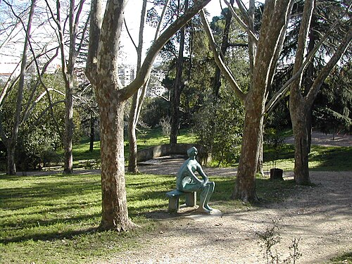
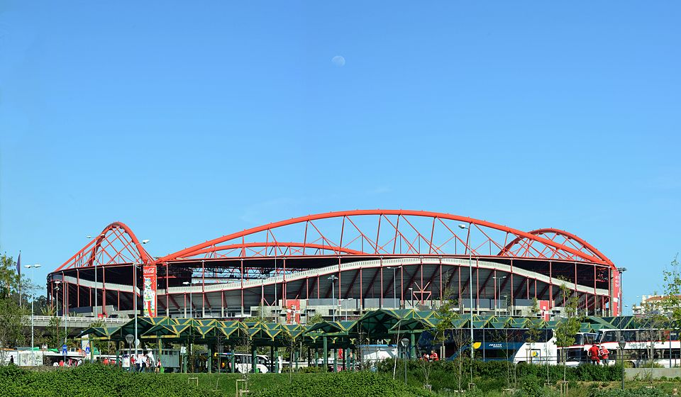
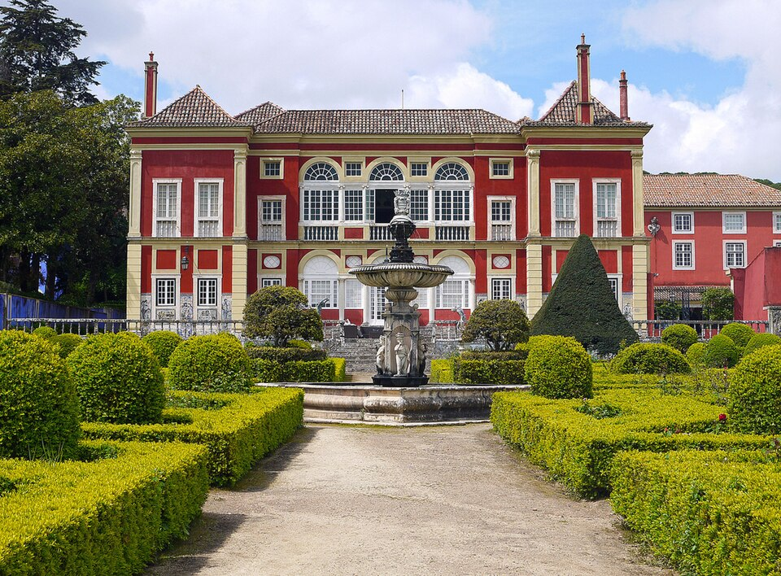
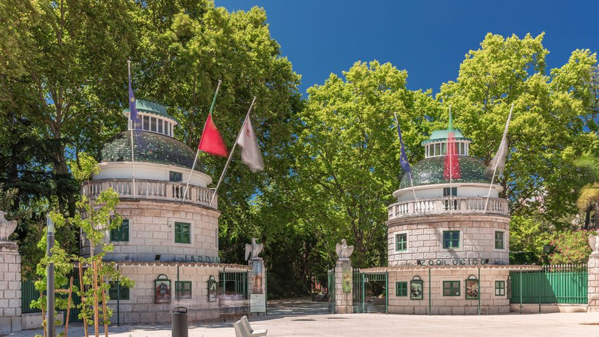

Fotografias
Explora algumas imagens com os locais mais emblemáticos da freguesia.




São Domingos de Benfica, Lisboa
Poesia
Entre colinas de luz suave,
ergue-se São Domingos de Benfica,
um canto lisboeta que guarda histórias,
com ruas vivas e alma rica.
Os jardins vestem-se de calma,
o Parque Bensaúde sopra frescor,
nas pedras antigas ecoa a memória,
mistura de presente e de amor.
Ali, o passado conversa com o futuro,
entre conventos, praças e canções,
as gentes sorriem com ternura,
tecendo vida em mil tradições.
E Lisboa, de braços abertos,
acolhe este bairro tão querido,
São Domingos é porto e caminho,
é lar, é força, é abrigo.
- ChatGPT